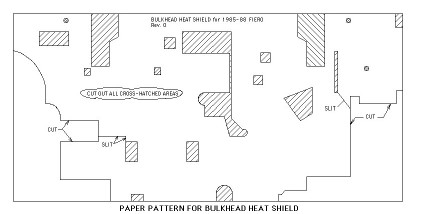

<!--
title: fierosails.com
description: 
published: true
date: 2025-10-29T20:54:53.726Z
tags: fierosails
editor: code
dateCreated: 2025-10-29T20:54:53.726Z
-->


<body bgcolor="#FFFFFF" text="#000000">
<table width="100%" border="0" cellspacing="5" cellpadding="0">
  <tr> 
    <td width="20%" height="1200" align="left" valign="top"> 
      <font face="Verdana, Arial, Helvetica, sans-serif" size="2">
<p>
     <a href="index.html">HOME</a><br>

     <a href="order.html">Order Form</a><br><br>
     
     Sail Panels<br>
     <a href="pics.html">- Sail Panel Choices</a><br>
     <a href="whats.html">- What's a Sail Panel?</a><br>
     <a href="howto.html">- How to Remove &amp; Replace Sail Panels</a><br>

     <a href="custom.html">- Custom Graphics</a><br>

     <a href="bargains.html">- Bargains</a><br>
     <a href="care.html">- Sail Panel Care</a><br><br>
     
     Decals<br>
     <a href="decal.html">- Decal Choices</a><br>

     <a href="bargains.html">- Bargains</a><br><br>

     
     Parts<br>

     <a href="paulsphotos.html">- Parts for Sale</a><br>
     <a href="PartsManual.html">- Parts Interchange Manual</a><br>
     <a href="heatshield.html">- Firewall Heat Shield</a><br><br>

     
     Info<br>
     <a href="fierosecrets.html">- Fiero Secrets</a><br>

     <a href="tempgage.html">- Temp Gauge Fix</a><br>

     <a href="InjectorTester.html">- Poor Man's Fuel Injector Tester</a><br>
     <a href="headlights.html">- Headlight Repair</a><br>

     <a href="ElectricAntenna.html">- Fiero Electric Antenna!</a><br>
     <a href="belt.html">- Fix That Loose Belt!</a><br>
     <a href="clubs.html">- Fiero Clubs</a><br><br>

     <a href="payship.html">Payment &amp; Shipping</a><br>

     <a href="refs.html">References</a><br>

     <a href="gallery.html">Rogue's Gallery (photos)</a><br>
     <a href="email.html">Contact Us</a>
     
</p>       </font>

    <td width="1%" bgcolor="#FF0000" height="1200" valign="top"></td>

    <td width="79%" align="left" valign="top">

      <left>

        <font color="red">
        <h1 align="CENTER">BULKHEAD HEAT SHIELD</h1>
        </font> <font size="+0" face="Courier" color="000000"> 
        <p><font face="Verdana, Arial, Helvetica, sans-serif" size="3">

</p><b>HEAT SHIELD PATTERN FOR '85-88 FIERO, $20 plus shipping</b></p>

<p>In this section of our web site we offer a paper pattern for do-it-yourself 
replication of the original bulkhead heat shield.  The pattern is full-size and the 
instructions are step-by-step with list of materials, part numbers, and sources.  
The pattern looks like this (not shown to scale):</p>

<br> <a href="images/shield.jpg"></a>

<p>All Fieros were made with a heat shield on the bulkhead (firewall) between the 
engine and the passenger compartment.  Over the years this fiberglass shield becomes 
filled with dirt and sometimes with oil.  It also deteriorates and may become ragged 
and messy.  Sometimes loose fiberglass in the engine compartment can clog the 
internal parts of the alternator.  (This happened to us.)  If replacement of the 
heat shield is desired you will find new shields are no longer available from GM.  
However it is possible to replace the heat shield with do-it-yourself materials 
which are cleaner and (we think) more effective at insulating.  But there is a risk. 
The original heat shield was made of fiberglass which is not flammable.  The 
materials we used for replacing the heat shield are made of mylar and plastic 
and <b>ARE</b> flammable at high temperatures.  These materials are close to the 
exhaust system and therefore a fire hazard exists.  Nevertheless, the materials have 
been used on some Fieros for over 8 years without mishap and we have heard of no 
problems.  The only deterioration noted has been in the aluminum adhesive tape used 
to cover edges of the insulation.  Over time the adhesive deteriorates and the tape 
must be renewed.  If you decide to replace your old heat shield with the "Reflectix" 
material mentioned below, <b>you do so at your own risk.</b></p>

<p>Alternative materials which may be safer have been available in the past from 
suppliers such as JEGS, Summit, ThermoTec, and Aircraft Spruce (aircraftspruce.com).
We no longer attempt to list specific products since stock seems to change 
frequently.  If you have successfully used 
a specific product your feedback would be appreciated.</p>

<p>We understand that Auburn Manufacturing (auburnmfg.com) makes an aluminized fiberglass fabric 
called "Ami-Glas" which has been used for aircraft firewall insulation, but we have 
no source for this nor any personal experience.  You may wish to contact Auburn directly 
for possible resellers.  A Fiero firewall requires a minimum coverage of 54" x 26" if 
you are shopping.</p>

<p>Note that the material on the two inner fender wells of the engine compartment is 
not addressed here and we do not offer patterns.  This material is the same as that 
originally used on the firewall but is addressed in the Pontiac 22P parts manual as "sound 
absorber" material, not insulation.</p>

<p>Should you choose to use it, "Reflectix" insulation is available at most home centers.  It is about 1/4" thick 
with reflective mylar on both surfaces 
and plastic "bubble wrap" between.  It is designed for home insulation use and is 
rated for service to about 200 degrees Fahrenheit.  Two layers are used in the 
typical Fiero installation.  A series of step-by-step photos of the installation 
process as performed by Paul Calewarts of Jacksonville, Florida, is located below:</p>

<p><a href="Insulation.html" target="_new">FIRE WALL PHOTOS</a> (Opens in new window.)</p>

<p>Our kit includes a full-size pattern used to cut the new insulation to fit the 
bulkhead and two pages of printed instructions.  If you would like to order the 
insulation pattern kit, please do so via our Order Form accessible from the menu at 
the left of this page.</p>

<p>Our pattern was made using an '88 GT as the basis.  Since then we have had input 
from owners who have an '85-87 Fieros and we have made 
patterns specific to these years.  Nevertheless you may 
find there are locations that need an extra hole.  Additional 
penetrations are easy to add once you have the basic pattern.  We would appreciate 
feedback if this occurs to you so we can make the pattern completely accurate for 
all Fiero variations.</p>

<p>The pattern can be shipped in a roll (no creases) within the continental US for 
$6-$7.  The pattern can also be folded and shipped in an envelope for about $3 within 
the US.  Please inquire for shipment costs outside the US (generally not expensive). 
Creases do not harm the pattern but they do make it a little more clumsy to handle 
(like handling a map).  Shipments outside the US will be via the envelope method 
only.</p>

          <p> </p>
          <p> </p>
        
        </font> 
      </center>

      </td>
  </tr>
</table>

</body>


<!--
     FILE ARCHIVED ON 01:30:43 Feb 24, 2013 AND RETRIEVED FROM THE
     INTERNET ARCHIVE ON 23:56:16 Oct 26, 2025.
     JAVASCRIPT APPENDED BY WAYBACK MACHINE, COPYRIGHT INTERNET ARCHIVE.

     ALL OTHER CONTENT MAY ALSO BE PROTECTED BY COPYRIGHT (17 U.S.C.
     SECTION 108(a)(3)).
-->
<!--
playback timings (ms):
  captures_list: 0.486
  exclusion.robots: 0.034
  exclusion.robots.policy: 0.025
  esindex: 0.01
  cdx.remote: 4.705
  LoadShardBlock: 167.292 (3)
  PetaboxLoader3.datanode: 198.978 (4)
  PetaboxLoader3.resolve: 94.831 (2)
  load_resource: 162.562
-->